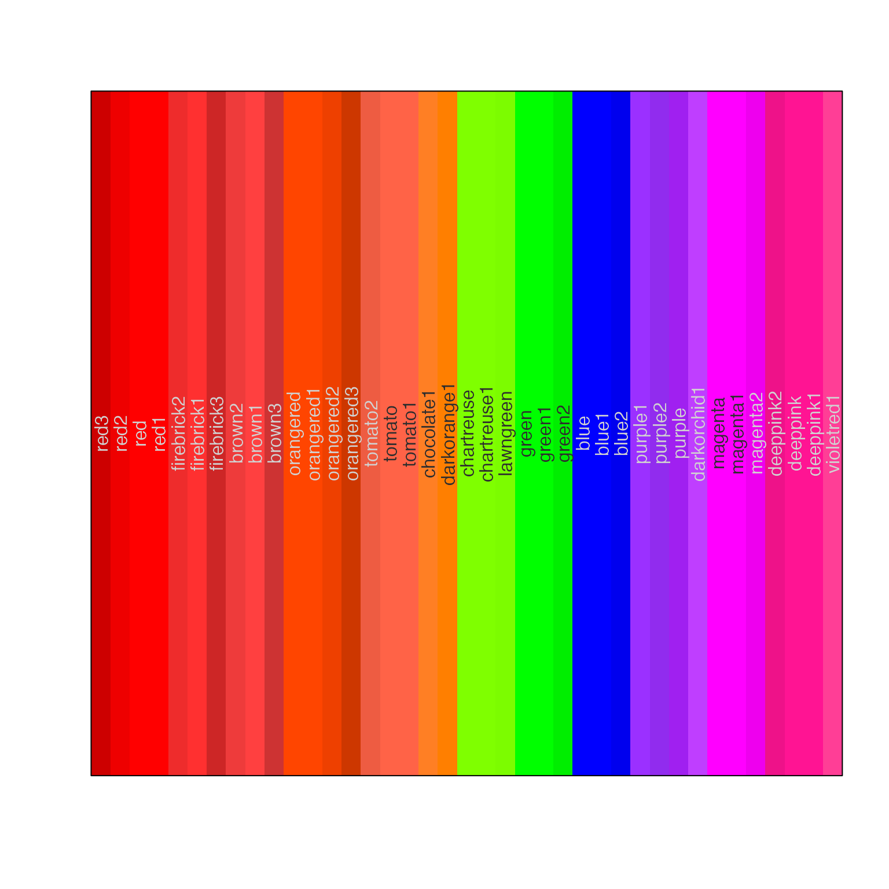
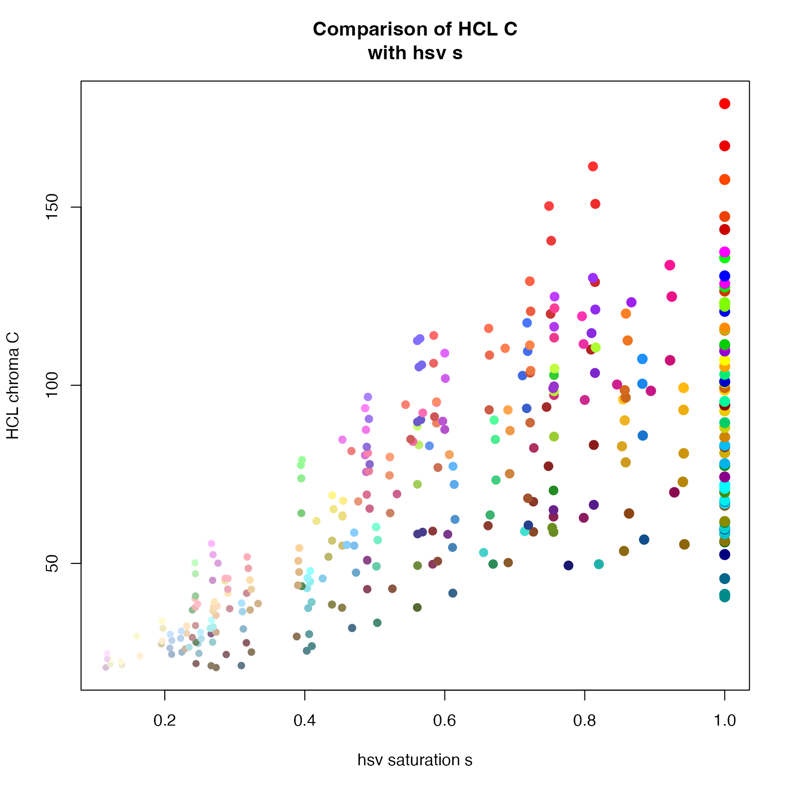
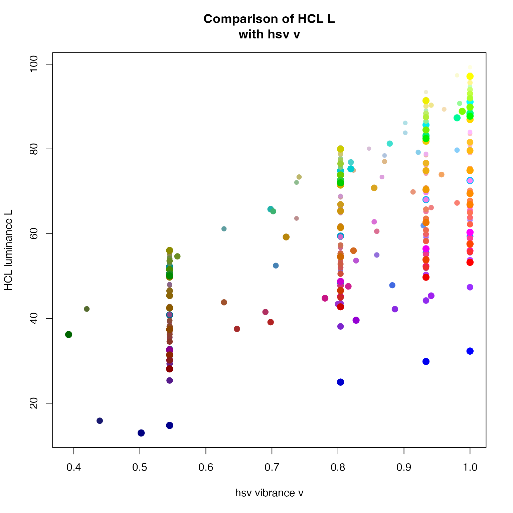

Subset a vector of colors using one or more color attributes
Source:R/colorjam-subset.R
subset_colors.RdSubset a vector of colors using one or more color attributes
subset_colors(x, ..., byCols = NULL, return_type = c("colors", "df"))
Arguments
| x |
|
|---|---|
| ... | any valid criteria to subset the color |
| byCols |
|
| return_type |
|
Value
character vector of colors that meet the filter criteria.
When return_type="df" the returned object is a data.frame with
the subset columns included for review.
Details
The input colors in x are converted internally to a data.frame
with colnames added by relevant helper functions.
"num"contains the integer index of the input vectorx."hex"containscharactervalues with hexadecimal colors including alpha. If the inputxis"red"then the hex value will be converted to"#FF0000FF".
See also
Other colorjam core:
blend_colors(),
closestRcolor(),
group2colors(),
rainbowJam()
Added by jamba::col2hcl()
"H"contains color hue as values from0to360."C"contains color chroma (aka saturation) ranging from0up to200, where typical "full saturation" is represented as values above 100."L"contains color luminance (brightness/lightness) ranging from0to100."alpha"the alpha transparency, ranging from0(fully transparent) to1(fully opaque, not transparent).
Added by grDevices::col2rgb()
"red"contains the red color channel, values range from0to255."green"contains the green color channel, values range from0to255."blue"contains the blue color channel, values range from0to255.
Added by jamba::col2hsv()
"h"contains color hue as values from0to1. Note these values may not map directly to color hue obtained fromjamba::col2hcl()."s"contains color saturation with values from0to1."v"contains color vibrance (brightness/lightness) with values from0to1.
Examples
# subset for saturated colors then sort by hue jamba::showColors(subset_colors(colors(), C > 120, byCols=c("H", "-C", "-L")))#> num hex H C L alpha red green blue h #> 33 33 #FF4040FF 12.17399 150.2912 57.37031 1 255 64 64 0.00000000 #> 34 34 #EE3B3BFF 12.17399 140.5642 53.62872 1 238 59 59 0.00000000 #> 134 134 #FF3030FF 12.17399 161.4305 55.67937 1 255 48 48 0.00000000 #> 135 135 #EE2C2CFF 12.17399 150.9062 52.02483 1 238 44 44 0.00000000 #> 254 254 #00FF00FF 127.72355 135.7804 87.73472 1 0 255 0 0.33333333 #> 255 255 #00FF00FF 127.72355 135.7804 87.73472 1 0 255 0 0.33333333 #> 450 450 #FF00FFFF 307.72355 137.4048 60.32421 1 255 0 255 0.83333333 #> 451 451 #FF00FFFF 307.72355 137.4048 60.32421 1 255 0 255 0.83333333 #> 503 503 #FF4500FF 16.75931 157.7440 57.58173 1 255 69 0 0.04509804 #> 504 504 #FF4500FF 16.75931 157.7440 57.58173 1 255 69 0 0.04509804 #> 505 505 #EE4000FF 16.79545 147.3569 53.86741 1 238 64 0 0.04481793 #> 552 552 #FF0000FF 12.17399 179.0414 53.24079 1 255 0 0 0.00000000 #> 553 553 #FF0000FF 12.17399 179.0414 53.24079 1 255 0 0 0.00000000 #> 554 554 #EE0000FF 12.17399 167.1939 49.71777 1 238 0 0 0.00000000 #> 555 555 #CD0000FF 12.17399 143.7236 42.73850 1 205 0 0 0.00000000 #> s v #> 33 0.7490196 1.0000000 #> 34 0.7521008 0.9333333 #> 134 0.8117647 1.0000000 #> 135 0.8151261 0.9333333 #> 254 1.0000000 1.0000000 #> 255 1.0000000 1.0000000 #> 450 1.0000000 1.0000000 #> 451 1.0000000 1.0000000 #> 503 1.0000000 1.0000000 #> 504 1.0000000 1.0000000 #> 505 1.0000000 0.9333333 #> 552 1.0000000 1.0000000 #> 553 1.0000000 1.0000000 #> 554 1.0000000 0.9333333 #> 555 1.0000000 0.8039216# for curiosity, compare H to h colors_df <- subset_colors(colors(), C > 20, byCols=c("C"), return_type="df"); plot(colors_df$h, colors_df$H, xlab="hsv hue h", ylab="HCL hue H", pch=20, cex=colors_df$s * 1 + 1, col=colors_df$hex);plot(colors_df$s, colors_df$C, xlab="hsv saturation s", ylab="HCL chroma C", pch=20, cex=colors_df$s * 1 + 1, col=colors_df$hex);plot(colors_df$v, colors_df$L, xlab="hsv vibrance v", ylab="HCL luminance L", pch=20, cex=colors_df$s * 1 + 1, col=colors_df$hex);